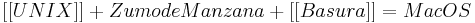

De: La Frikipedia, la enciclopedia extremadamente seria.
De: La Frikipedia, la enciclopedia extremadamente seria. De: La Frikipedia, la enciclopedia extremadamente seria.
| De la serie Sistemas Operativos: | ||
| Mac OS | ||
| ||
| Nombre | Mac OS | |
| Desarrollador | Apple | |
| Licencia | En Futhorc Anglosajón | |
| Núcleo | | |
| Última versión | En busca y captura | |
| Estado actual | Al fondo de los cajones | |
| Número de cuelgues/min. | Integer Overflow (number too big) | |
| Puertas abiertas a los virus | Sin virus gracias a las vacunas | |
| ¿Que tipo de usuarios pueden usarlo? | Pijos, principalmente, y arcoiris?) | |
Sistema operativo de Simoleones, que la misma suma de dinero era la que habia usado Puertas para boicotear a todos.
Mac OS es un sistema perfecto (teniendo en cuenta que esto fue extraido de una epoca en la que todos eran felices ) que solo funciona en ordenadores Apple, este sistema no se puede usar en otros ordenadores bajo pena de fuerte tortura. La tortura consiste en depende de la tribu urbana a la que pertenescas escucharas la cancion de la tribu urbana opuesta a la tuya (en el 90% de los casos la tribu urbana opuesta son los villeros depende el nombre suyo de cada pais (refiriéndose a los villeros). Estas son algunas de las características de Mac OS:
Mac OS fue discontinuado en el 2001, cuando se obligó a todos los usuarios de este sistema a migrar a Mac OS X, de lo contrario sus ordenadores aniquilarían a todo ser vivo a veinte metros a la redonda.
Se cree que lo hizo el hermano gemelo perdido maligno de alguien bajo unos nombres falsos aunque los verdaderos creadores no sabian nada aceptaron igual por que querian ser famosos. Nadie sabe el paradero de esa persona misteriosa pero se cree que esta en Argentina en una villa perteneciente a la tribu urbana de Flaite.
Causas por las que ya no se usa:
Las recomendaciones (para usarlo) para la salud son:
Pueden producirse los siguientes efectos secundarios:
Tenés que tener cuidado de no toparte con los creadores de esto, por que si no se van a poner pesados para que compres sus cosas y te van a querer lavar el cerebro con que sus cosas son las mejores y que los demas se copiaron de ellos (sobre todo si tienes dinero) .
El sistema se puede simplificar en una sola formula: 
| | |
| BSD | FreeBSD • OpenBSD |
| GNU/Linux | Debian • Distro • GNU • Gentoo Linux • Linux • Ubuntu |
| Hasefroch | DOS • MS-DOS • 1.0 • 3.1 •95 • 98 • 2000 • Me • XP • Vista • 7 • 8 |
| Mac | Mac OS • Mac OS X |
| Otros | Android • Armario • Disquete • EMacs • Federico OS • Hore • Singularity • Squeak • Domination XP • MATRIX |
Autor(es):